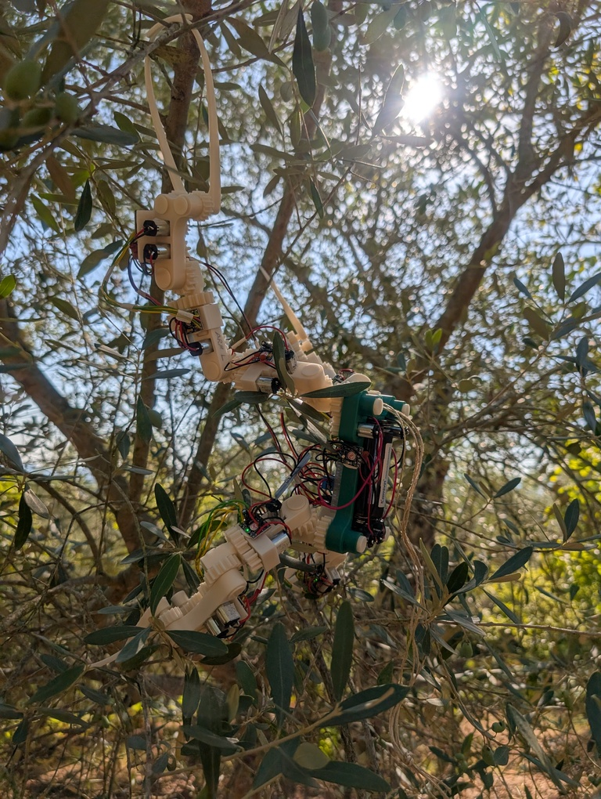
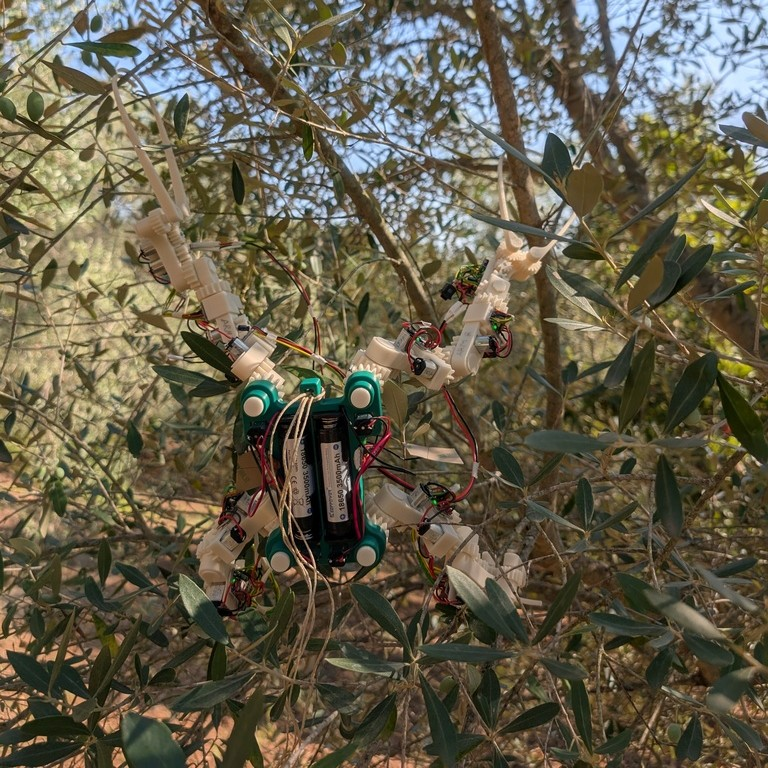

Gibbon Bot
Gibbon Bot is a robotic ape designed for olive tree harvesting, pruning, and grove automation. It navigates tree canopies like a gibbon, providing a solution to labor shortages in agriculture while maintaining the precision needed for premium olive production.



Gibbon Bot mk.1 - Field-tested in Calabria, Italy (August 2025)
Solving Olive Grove Challenges
Modern olive and fruit growers face critical challenges:
- Labor shortages – increasingly difficult to find skilled workers for grove maintenance and harvesting
- Rising labor costs – seasonal agricultural labor is expensive and hard to retain
- Soil and tree damage – traditional heavy machinery compacts soil and harms delicate olive trees
- Precision requirements – organic and premium olive production demands selective, careful harvesting and pruning
How Gibbon Bot Helps
Our agricultural robotics solution addresses these problems with:
- Automated olive harvesting – gentle, selective picking that preserves fruit quality
- Precision tree pruning – selective branch removal for healthier trees and better yields
- Grove health monitoring – AI-powered detection of pests, diseases, and tree stress
- Canopy navigation – moves through olive trees without soil compaction or tree damage
- Tall tree operations – installs hail nets, performs maintenance on high canopies
Development Status
Gibbon Bot mk.1 prototype was successfully field-tested in Calabria, Italy in August 2025, demonstrating stable operation in traditional olive grove canopies.
Gibbon Bot mk.2 is currently being built and tested, with both hardware and software performing well. This next-generation tree canopy robot builds on the proven mk.1 design with enhanced capabilities for olive farm automation.
Early Access & Support
Be among the first to deploy robotic automation in your olive grove:
- Prepay per kg harvesting – lock in today's rates for future automated olive harvesting, help fund development
- Preorder research prototype – get early access to the tree canopy robot, collect field data, train AI for your specific grove conditions
Interested in olive harvesting robotics? Reach out today.